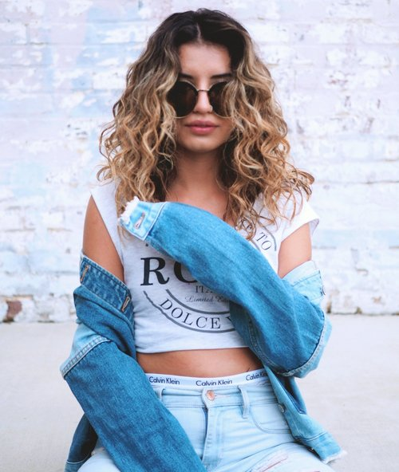

Career Objective
Creative Director specializing in photography and graphic design.
Education
Electronic Media, University of Miami
Classes
- Broadcast Journalism
- Magazine Planning
- Writing In The Digital Age
- Digital Photography
Experience
PIL Creative Group
Creative Intern
Coordinating and publicizing events through creative marketing designs as well as, implenting social media strategies.
More infoBunn DJ Company
Media Intern
Creating and editing content through videography and photography. Organizing follow-ups to maintain professional relationships with clients.
More infoCarolina Perez Photography
Personal Projects
Working with agencies and clients to create content for products, merchandise, or personal branding.
More info